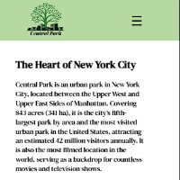

Hey, I’m Sally!
The creative mind behind Florafly Design Studio, I blend art and technology to craft stunning, functional websites that leave a lasting impression.

Our Services
Web Design & Development
Custom, responsive websites that elevate your brand with seamless functionality and stunning design.
Brand Identity & Logo Design
Distinctive logos and branding elements that establish a strong and professional identity.
Print & Digital Design
Eye-catching menus, billboards, and marketing materials designed to enhance your brand’s presence.
